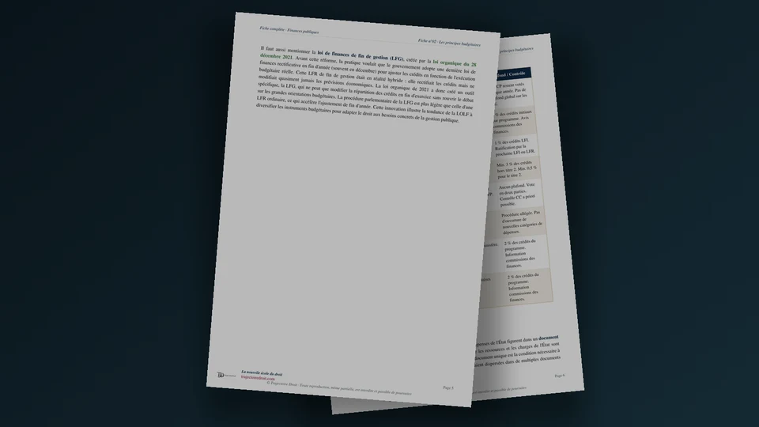

Les grands principes du droit budgétaire, la LOLF
Le droit budgétaire français repose sur cinq grands principes, l'annualité, l'unité, l'universalité, la spécialité et la sincérité. Les quatre premiers viennent de la loi organique relative aux lois de finances, la LOLF, du 1er août 2001, qui a remplacé l'ordonnance de 1959 en substituant une logique de résultats à l'ancienne logique de moyens. La sincérité, elle, est née de la jurisprudence du Conseil constitutionnel avant d'être inscrite dans la loi.

L'essentiel en une phrase
Un budget se vote selon des règles précises, construites depuis deux siècles pour garantir que le Parlement contrôle réellement l'argent public. Quatre de ces règles sont anciennes et se sont imposées progressivement au XIXe siècle, l'annualité, l'unité, l'universalité et la spécialité. Une cinquième, la sincérité, est beaucoup plus récente, puisqu'elle vient d'une décision du Conseil constitutionnel de 1998. Tu dois donc connaître ces cinq principes avant même d'ouvrir le détail de la LOLF, parce que chaque section qui suit s'appuie dessus.
Retiens d'abord la date qui structure tout le reste de cette fiche. La loi organique relative aux lois de finances, la LOLF, date du 1er août 2001. Elle a remplacé une ordonnance de 1959 devenue obsolète, en faisant passer le budget de l'État d'une logique de moyens (on vote des crédits par nature de dépense) à une logique de résultats (on vote des crédits par politique publique, avec des objectifs à atteindre). Les cinq principes que tu vas lire existaient déjà avant 2001, mais la LOLF a renouvelé chacun d'eux.
Le principe d'annualité
Commence par le principe le plus intuitif, celui qui fixe le rythme de toute la matière. En effet, l'article 6 de la LOLF dispose que le budget de l'État porte sur une année civile, du 1er janvier au 31 décembre. De plus, l'article 47 de la Constitution impose au Parlement de voter la loi de finances initiale avant le 31 décembre, pour qu'elle s'applique dès le 1er janvier suivant.
Ce principe recouvre en réalité deux exigences distinctes, et ta copie doit les séparer clairement. L'annualité du vote oblige le Parlement à se prononcer chaque année sur les recettes et les dépenses de l'État, ce qui reconduit chaque année le consentement à l'impôt hérité de l'article 14 de la Déclaration des droits de l'homme et du citoyen de 1789. L'annualité de l'exécution, elle, impose que les crédits ouverts soient consommés avant le 31 décembre, sous peine d'être annulés, ce qui pousse parfois les gestionnaires publics à dépenser en fin d'exercice plutôt qu'à rendre les crédits inutilisés.
Article 14 de la Déclaration des droits de l'homme et du citoyen, 1789
« Tous les citoyens ont le droit de constater, par eux-mêmes ou par leurs représentants, la nécessité de la contribution publique, de la consentir librement, d'en suivre l'emploi, et d'en déterminer la quotité, l'assiette, le recouvrement et la durée. »DDHC du 26 août 1789, article 14
Ce consentement annuel vient d'abord d'Angleterre, où la Pétition des droits de 1628 puis le Bill of Rights de 1689 interdisent au roi de lever l'impôt sans l'accord du Parlement. La Constitution de 1791 reprend le principe pour la France, avant que le baron Louis, ministre des finances de Louis XVIII, ne fasse voter la loi de budget du 25 mars 1817. Ce texte fixe un cycle en quatre temps que le droit budgétaire suit encore aujourd'hui, voter le budget, l'exécuter, en rendre compte, puis le faire contrôler a posteriori.
La loi de finances initiale se vote en deux parties, et l'ordre entre elles compte autant que leur contenu. La première partie fixe les recettes et l'équilibre général. La seconde répartit les crédits entre les missions. Tant que la première partie n'est pas adoptée, le Parlement ne peut pas examiner la seconde. Un précédent célèbre montre pourtant ce qui arrive quand cette règle n'est pas respectée. En décembre 1979, le Conseil constitutionnel a censuré la loi de finances pour 1980 dans sa totalité, parce qu'un article de la première partie n'avait pas été régulièrement adopté avant l'examen de la seconde. Faute de budget applicable au 1er janvier 1980, le Parlement a donc voté à l'unanimité, en quelques jours, une loi spéciale qui a autorisé la poursuite de la perception des impôts existants, le temps qu'un budget définitif soit adopté à la mi-janvier. Tu retrouveras ce mécanisme un peu plus loin, presque inchangé, presque cinquante ans plus tard.
L'annualité stricte ne pourrait pas gérer seule une économie moderne, où l'État signe des marchés qui courent sur plusieurs années. La LOLF a donc organisé plusieurs aménagements, tous strictement plafonnés pour ne pas vider le principe de sa substance.
- Les autorisations d'engagement et les crédits de paiement (article 8 de la LOLF). L'autorisation d'engagement couvre tout de suite le montant total d'un marché pluriannuel, tandis que le crédit de paiement, lui, reste voté chaque année pour la part effectivement payée.
- Les reports de crédits (article 15). Les crédits non consommés peuvent, sous conditions, être reportés à l'année suivante, dans la limite de 3 % des crédits initiaux d'un programme. Les crédits de personnel, eux, ne se reportent jamais.
- Les décrets d'avance (article 13). En cas d'urgence, le gouvernement peut ouvrir des crédits supplémentaires par décret, jusqu'à 1 % des crédits votés en loi de finances initiale, avec un avis préalable du Conseil d'État et des commissions des finances de l'Assemblée nationale et du Sénat.
- Les décrets d'annulation (article 14). Ce mécanisme, distinct du précédent, permet d'annuler des crédits pour éviter une dégradation de l'équilibre budgétaire, dans la limite de 1,5 % des crédits ouverts.
- La réserve de précaution (article 51). Chaque année, une fraction des crédits est gelée en début d'exercice pour absorber les aléas de gestion. Le taux, présenté dans une annexe du projet de loi de finances, est fixé par une simple circulaire du ministère du Budget, pas par la LOLF elle-même.
À côté de ces mécanismes de souplesse, la loi de finances rectificative reste l'outil le plus puissant. À l'inverse du décret d'avance, elle suit la procédure législative complète et peut créer ou supprimer un impôt. L'année 2020 en donne l'exemple le plus spectaculaire, avec quatre lois de finances rectificatives votées en quelques mois pour financer les mesures d'urgence sanitaire. Le déficit public a ainsi fini l'année autour de 9 % du PIB, très loin de ce que prévoyait la loi de finances initiale.
Le principe d'unité
Le deuxième principe complète directement l'annualité. Retiens-le comme le plus simple des cinq. L'unité budgétaire impose que toutes les recettes et toutes les dépenses de l'État figurent dans un seul document, la loi de finances. Le Conseil constitutionnel a confirmé, dans sa décision du 25 juillet 2001 sur la LOLF elle-même, que ce principe a une valeur constitutionnelle implicite, parce qu'un Parlement qui ne voit qu'une partie des comptes ne peut pas exercer un contrôle réel.
La LOLF organise pourtant trois compartiments distincts, tous rattachés à ce document unique. Le budget général regroupe l'essentiel des recettes et des dépenses de l'État, organisé en missions et en programmes. Le budget annexe, un seul aujourd'hui, retrace les recettes et les dépenses de la navigation aérienne civile, financées par les redevances des compagnies aériennes plutôt que par l'impôt. Les comptes spéciaux, enfin, regroupent quatre catégories, les comptes d'affectation spéciale (le plus connu finance les pensions des fonctionnaires de l'État, pour plus de 60 milliards d'euros par an), les comptes de commerce, les comptes d'opérations monétaires et les comptes de concours financiers. Chacun de ces compartiments reste donc voté par le Parlement et contrôlé par la Cour des comptes, ce qui préserve l'unité formelle malgré la diversité des opérations retracées.
Le principe d'universalité
L'universalité complète l'unité en imposant une présentation claire des flux financiers, à travers deux règles distinctes que tu dois pouvoir citer séparément. La règle de non-affectation interdit de réserver une recette précise au financement d'une dépense précise, toutes les recettes de l'État formant une masse commune, imputée à un compte unique selon l'article 6 de la LOLF. La règle de non-contraction impose de présenter les recettes et les dépenses pour leur montant brut, sans compenser les unes par les autres.
La non-affectation connaît des exceptions strictement encadrées. Les fonds de concours, prévus par l'article 17 de la LOLF, permettent à un tiers, par exemple une collectivité, une entreprise ou l'Union européenne, de financer une dépense précise de l'État. Les comptes d'affectation spéciale que tu viens de croiser à l'instant en constituent également une autre. La non-contraction s'observe ainsi dans le traitement des remboursements et dégrèvements d'impôts, inscrits en dépenses pour leur montant réel plutôt que discrètement retranchés des recettes fiscales. Une dissertation ambitieuse doit aussi connaître les dépenses fiscales, ces exonérations ou crédits d'impôt qui réduisent les recettes de l'État sans jamais figurer parmi les crédits votés. Elles représentent chaque année plusieurs dizaines de milliards d'euros, recensées seulement dans une annexe du projet de loi de finances plutôt que dans le corps du budget lui-même.
Le principe de spécialité
La spécialité complète à son tour les deux principes précédents. Il ne suffit pas de voter un budget unique et complet. Il faut aussi que chaque crédit serve exactement à ce pour quoi le Parlement l'a autorisé. C'est en effet sur ce principe que la LOLF a le plus innové par rapport à l'ordonnance de 1959, en déplaçant l'unité de spécialité du chapitre budgétaire vers le programme.
L'architecture voulue par l'article 7 de la LOLF s'organise en trois niveaux. La mission forme ainsi l'unité de vote du Parlement, ministérielle ou partagée entre plusieurs ministères. La loi de finances pour 2025 en comptait 34, réparties en 140 programmes. Le programme constitue le niveau de responsabilité réelle, confié à un responsable de programme nommément désigné, le plus souvent un haut fonctionnaire, évalué sur les résultats de son programme. L'action, enfin, subdivise chaque programme à titre purement indicatif, sans valeur contraignante pour le Parlement.
Un seul mot te suffit pour retenir l'apport le plus original de la spécialité version LOLF, la fongibilité asymétrique (article 7, alinéa 4). À l'intérieur de son programme, le responsable peut redéployer librement ses crédits d'un titre de dépense vers un autre. Il peut par exemple diminuer ses crédits de personnel pour financer de l'investissement. Il ne peut jamais faire l'inverse et augmenter ses crédits de personnel en puisant ailleurs. L'asymétrie protège ainsi la masse salariale de l'État, qui pèse à elle seule plus du tiers du budget général, contre toute dérive qui échapperait au contrôle du Parlement.
Deux mécanismes permettent enfin de corriger la répartition des crédits en cours d'année sans passer par une nouvelle loi. Le virement déplace des crédits entre deux programmes d'un même ministère, dans la limite de 2 % des crédits du programme concerné. Le transfert fait la même chose entre deux ministères différents, quand l'un confie à l'autre l'exécution technique d'une dépense qu'il a lui-même décidée. Les deux passent ainsi par décret et exigent l'information préalable des commissions des finances de l'Assemblée nationale et du Sénat.

Fiche complète
Finances publiques L2
La sincérité budgétaire
La sincérité complète ces quatre principes, mais elle a une histoire différente. Elle vient d'abord d'une décision du Conseil constitutionnel du 29 décembre 1998, avant d'être inscrite à l'article 32 de la LOLF, qui impose aux lois de finances de présenter de façon sincère l'ensemble des ressources et des charges de l'État.
Distingue bien deux dimensions de cette exigence, souvent confondues à tort. La sincérité des prévisions porte sur les hypothèses économiques retenues pour construire le budget, par exemple le taux de croissance, l'inflation ou le niveau du chômage. Le Conseil constitutionnel ne censure une loi de finances sur ce terrain qu'en cas d'erreur manifeste, une prévision si irréaliste qu'aucun expert sérieux n'aurait pu la retenir. Il laisse ainsi volontairement au gouvernement une réelle marge d'appréciation sur ses choix économiques. La sincérité des comptes, elle, porte sur les résultats une fois l'exercice clos. Depuis la révision constitutionnelle du 23 juillet 2008, l'article 47-2 de la Constitution confie à la Cour des comptes le soin de certifier chaque année la régularité, la sincérité et la fidélité des comptes de l'État. À ce jour, elle n'a jamais délivré de certification sans aucune réserve.
Le Haut Conseil des finances publiques, institué par une loi organique du 17 décembre 2012 pour transposer un traité européen, joue un rôle proche mais distinct, en amont plutôt qu'en aval. Il est placé auprès de la Cour des comptes et rend un avis public sur le réalisme des prévisions macroéconomiques du gouvernement avant chaque loi de finances, chaque loi de finances rectificative et chaque programme de stabilité envoyé à la Commission européenne. Son avis ne lie pas juridiquement le Parlement, mais il crée une pression politique difficile à ignorer.
De l'ordonnance de 1959 à la LOLF
Pour comprendre pourquoi la LOLF a autant changé le droit budgétaire, regarde d'abord ce qu'elle a remplacé. L'ordonnance organique du 2 janvier 1959 naît dans la foulée de la Constitution de la Ve République, pour mettre fin au désordre budgétaire de la IVe République, où le budget de 1957 n'a par exemple été adopté qu'en mars 1958.
Son architecture reposait sur environ 850 chapitres, votés par nature de dépense plutôt que par politique publique. Le trait le plus caractéristique de ce système reste le mécanisme des services votés, entre 90 et 95 % des crédits reconduits presque automatiquement d'une année sur l'autre, le Parlement ne débattant réellement que du reliquat. Cette reconduction quasi mécanique, combinée à une comptabilité de caisse qui ignore le patrimoine réel de l'État, produisait ce que les spécialistes appellent le syndrome de la dépense obligée. Un gestionnaire qui n'épuise pas ses crédits avant le 31 décembre risque en effet de voir son enveloppe réduite l'année suivante, ce qui l'incite à dépenser sans toujours en avoir besoin.
Le rapport Migaud-Lambert de 1999, du nom d'un rapporteur socialiste et d'un sénateur centriste, dresse le constat de ces limites et propose de passer d'une logique de moyens à une logique de résultats. Le texte qui en sort, la LOLF, est adopté à l'unanimité par l'Assemblée nationale le 28 juin 2001, un fait rare pour une loi organique financière. Sa montée en puissance se fait progressivement, une expérimentation dès 2002, les premiers projets annuels de performances en 2004, et un premier budget complet sous cette architecture en 2006, année où elle abroge définitivement l'ordonnance de 1959.
| Critère | Ordonnance de 1959 | LOLF de 2001 |
|---|---|---|
| Logique | De moyens, on vote des chapitres par nature de dépense | De résultats, on vote des programmes par politique publique |
| Unité de vote | Environ 850 chapitres | Une trentaine de missions, une centaine de programmes |
| Responsabilité | Aucun gestionnaire nommément identifié | Un responsable de programme désigné et évalué |
| Souplesse de gestion | Spécialité stricte par chapitre | Fongibilité asymétrique à l'intérieur du programme |
| Performance | Aucun objectif ni indicateur de résultat | Projet puis rapport annuels de performances |
| Comptabilité | De caisse uniquement, vision annuelle tronquée | Triple, budgétaire, générale et analytique |
| Reconduction | 90 à 95 % des crédits en services votés | Chaque programme voté dans son intégralité |
Le pilotage par la performance, PAP et RAP
La réforme repose sur deux documents que tu dois savoir distinguer d'un mot. Le projet annuel de performances (PAP), annexé au projet de loi de finances à l'automne, fixe pour chaque programme les objectifs à atteindre et des indicateurs chiffrés, avant même le début de l'exercice. Le rapport annuel de performances (RAP), annexé quelques mois plus tard à la loi relative aux résultats de la gestion, compare ensuite ces objectifs aux résultats réellement obtenus, une fois l'exercice terminé.
La conception d'un bon indicateur reste en effet délicate, et un correcteur apprécie toujours de te voir discuter cette difficulté plutôt que la réciter. Un bon indicateur doit remplir trois exigences à la fois. Il doit mesurer ce qui compte vraiment pour l'usager, s'appuyer sur des données fiables et vérifiables, et éviter de pousser un gestionnaire à optimiser son chiffre plutôt qu'à améliorer le service réel. Si l'on mesure par exemple le seul taux de réussite au baccalauréat d'un lycée, sans corriger l'effet du recrutement des élèves, ce lycée est incité à devenir plus sélectif plutôt qu'à mieux enseigner. La LOLF distingue pour cette raison trois familles d'indicateurs. Les indicateurs d'efficacité socioéconomique mesurent l'effet sur le bénéficiaire final de la politique publique. Les indicateurs de qualité de service mesurent la satisfaction de l'usager. Les indicateurs d'efficience de gestion mesurent le rapport entre les résultats obtenus et les moyens engagés.
Le cadre européen qui s'impose au budget français
Aucune loi de finances française ne se construit plus seule depuis les années 1990. Le Pacte de stabilité et de croissance de 1997 impose aux États de la zone euro un déficit public limité à 3 % du PIB et une dette publique plafonnée à 60 % du PIB, renforcés par le Six-Pack en 2011 puis le Two-Pack en 2013. Le traité sur la stabilité, la coordination et la gouvernance, signé en 2012, va d'ailleurs plus loin en exigeant de chaque État un organisme indépendant de surveillance budgétaire. Le Haut Conseil des finances publiques, que tu as croisé plus haut, remplit précisément ce rôle.
Ce cadre a été réformé en 2024. Trois textes européens, entrés en vigueur le 30 avril 2024, remplacent l'ancienne logique de règles chiffrées uniformes par une trajectoire de dépenses négociée avec chaque État, sur quatre ans en principe, extensible à sept ans si l'État s'engage sur des réformes et des investissements précis. En droit interne, cette discipline se traduit ainsi par les lois de programmation des finances publiques, prévues par l'article 34 de la Constitution depuis 2008. La loi de programmation adoptée le 18 décembre 2023 pour la période 2023-2027 reste, à l'heure où tu lis ces lignes, le texte de référence, même si le Haut Conseil des finances publiques a lui-même jugé sa trajectoire dépassée par l'ampleur du déficit et de la dette constatés depuis.
2025-2026, l'annualité mise à l'épreuve
Tu as lu plus haut l'épisode de décembre 1979. Un scénario presque identique s'est rejoué fin 2025, la preuve que ces mécanismes jouent encore un rôle bien réel.
La commission mixte paritaire chargée d'accorder l'Assemblée nationale et le Sénat sur le budget 2026 a échoué le 19 décembre 2025. Faute de loi de finances prête pour le 1er janvier, le Parlement a voté à l'unanimité, le 23 décembre 2025, une loi spéciale sur le fondement de l'article 45 de la LOLF, qui met en œuvre l'article 47 de la Constitution, pour autoriser la poursuite de la perception des impôts existants. Les débats ont repris en janvier dans une Assemblée toujours sans majorité depuis la dissolution de juin 2024, et le Premier ministre a dû engager la responsabilité de son gouvernement sur le fondement de l'article 49, alinéa 3, à deux reprises, le 20 puis le 30 janvier 2026. Le Conseil constitutionnel a été saisi par plusieurs groupes parlementaires et par le Premier ministre lui-même, une démarche restée exceptionnelle pour un texte budgétaire. Il a validé l'essentiel de la loi, mais il a censuré sept dispositions sans lien avec le budget, ce que le droit budgétaire appelle des cavaliers. La loi de finances pour 2026 n'a donc été promulguée que le 19 février 2026, près de deux mois après le début de l'année qu'elle était censée organiser.
L'utiliser dans une copie
Dans une dissertation. Un sujet du type « les principes budgétaires sont-ils toujours respectés » ou « la LOLF a-t-elle changé la nature du contrôle parlementaire » se construit naturellement autour de la tension entre la rigueur affichée par les cinq principes et les nombreux aménagements que la LOLF elle-même organise, comme les reports, les virements, la fongibilité ou la réserve de précaution. N'oublie pas non plus la dimension européenne. De plus, un correcteur de finances publiques valorise toujours une copie capable de relier le droit budgétaire interne aux engagements pris par la France envers l'Union européenne.
Dans un cas pratique. Identifie d'abord quel principe est en cause dans l'énoncé, avant de chercher l'article exact de la LOLF qui l'organise. Un crédit dépensé pour autre chose que sa destination interroge en effet la spécialité. Une recette réservée à une dépense précise interroge l'universalité. Un document budgétaire incomplet interroge l'unité. Vérifie ensuite si un aménagement légal justifie ou non la pratique décrite dans l'énoncé, plutôt que de conclure trop vite à une irrégularité.
Les erreurs qui coûtent des points
- Tu confonds la LOLF avec une loi ordinaire. C'est une loi organique, adoptée selon une procédure renforcée et soumise obligatoirement au Conseil constitutionnel avant sa promulgation. Elle a une valeur supérieure à une loi ordinaire, sans pour autant être de niveau constitutionnel.
- Tu crois que la fongibilité asymétrique joue dans les deux sens. Le responsable de programme peut seulement diminuer ses crédits de personnel pour financer autre chose. Il ne peut jamais faire l'inverse. Une réponse qui inverse ce sens perd l'essentiel de la notion.
- Tu confonds le décret d'avance et le décret d'annulation. Le décret d'avance ouvre des crédits nouveaux en urgence, dans la limite de 1 % des crédits de la loi de finances initiale. Le décret d'annulation, lui, annule des crédits existants, dans la limite de 1,5 %. Ce sont donc deux mécanismes distincts, prévus par deux articles différents de la LOLF.
- Tu réduis la sincérité à un simple contrôle des chiffres. Le Conseil constitutionnel ne censure une prévision que si elle est manifestement irréaliste, ce qui laisse une réelle marge d'appréciation au gouvernement. La sincérité des comptes obéit en revanche à une exigence bien plus stricte, l'exactitude, contrôlée après coup par la Cour des comptes.
- Tu penses que le budget de l'État peut légalement rester non voté au 1er janvier sans aucune conséquence. L'article 47 de la Constitution prévoit justement une procédure de secours, la loi spéciale, pour éviter que l'État ne se retrouve un seul jour sans base légale pour percevoir l'impôt.
Questions fréquentes
Quels sont les 5 grands principes du droit budgétaire ?
Qu'est-ce que la LOLF ?
Quelle est la différence entre l'ordonnance de 1959 et la LOLF ?
Qu'est-ce que la fongibilité asymétrique ?
Que se passe-t-il si le budget n'est pas voté avant le 1er janvier ?

Les finances publiques, au-delà des seuls principes budgétaires.
Ma fiche de finances publiques L2 reprend tout le semestre, les principes budgétaires, la LOLF, la procédure d'adoption du budget et son contrôle par la Cour des comptes, expliqués simplement et prêts à servir en dissertation comme en cas pratique.
Voir la fiche de finances publiques L2Où se rangent les principes budgétaires dans le programme
Les finances publiques se rattachent au droit constitutionnel et au droit administratif, au programme de la licence de droit. Voici les pages à consulter si tu veux aller plus loin.